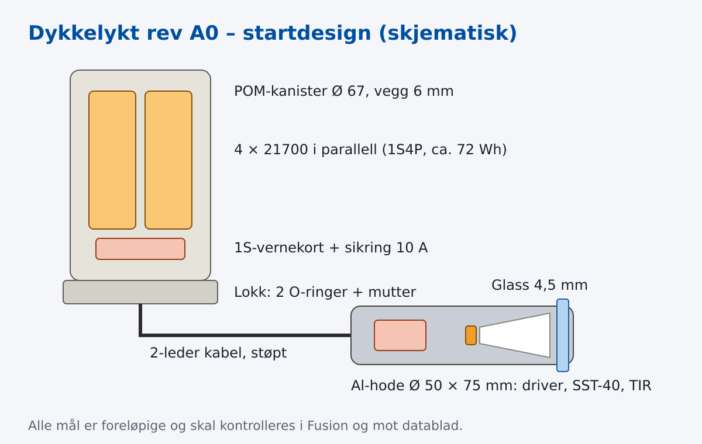
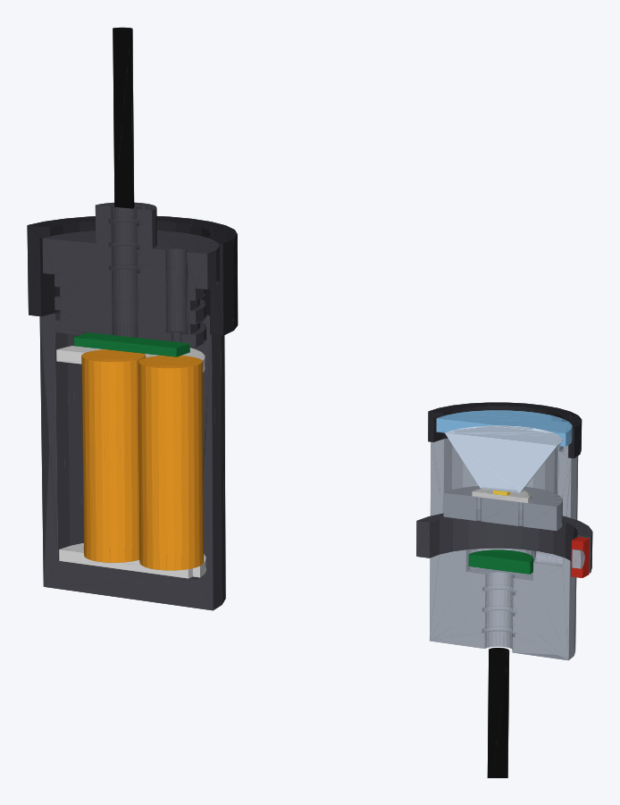

Et studentprosjekt i marin teknikk ved NTNU: en primærlykt med batterikanister, kabel og et lite lyktehode på hånden (Goodman-håndtak). Målet er å slå kommersielle kanisterlykter på lys, brenntid og service, til en materialkost på omtrent 1000 kr.
Ikke til ekte dykking. Prototypen er i konseptfasen og er ikke sertifisert eller trykktestet. Den skal aldri være eneste lyskilde: det dykkes alltid med en kjøpt backup-lykt. Alle tall merket antatt skal kontrolleres mot datablad, leverandørpris eller beregning.
Referanselykter, hentet fra produsent og forhandlere 23.11.2026:
| Lykt | Lys | Brenntid høy | Pris (ca.) |
|---|---|---|---|
| Halcyon Focus 2.0 (kanister) | ~80 000 lux @ 1 m | ~2,5 t (5,2 Ah) | ca. 1650 USD |
| Light Monkey 32 W VF | opptil 8600 lm | ca. 200 min (10 Ah) | ikke hentet |
| OrcaTorch D630 V2.0 | 4000–4600 lm, 7° | ca. 5 t (oppgitte batteridata er motstridende) | fra ca. 550 USD |
| Kriterium | Vårt mål |
|---|---|
| Senterstyrke | ≥ 80 kcd (krav), ≥ 100 kcd (strekkmål) |
| Brenntid | ≥ 3 t på høy ved 10 °C, ≥ 10 t på lav |
| Batteri | Standard 21700-celler som kan byttes, og en vanlig 1S-lader |
| Forvarsel | Lyset blir aldri mørkt uten forvarsel (blink og trinnvis dimming) |
| Service | Alle deler kan kjøpes og byttes; dokumentasjonen er åpen |
| Pris | Materialkost ca. 1000 kr (maks 1300 kr) |
Bevisste kompromisser i rev A: driftsdybde 65 m (kommersielle lykter tåler typisk ca. 150 m), ingen våt-koblbar kabel og en ferdigkjøpt driver.

| Enhet | Utforming |
|---|---|
| Kanister | POM, dreid som én kopp: Ø 67 mm, vegg 6 mm, bunn 10 mm. 4 × 21700 i parallell (1S4P, ca. 72 Wh). Lokk med flens (12 mm), to radielle O-ringer og en løs koblingsmutter, så kabelen ikke vris. Egen trykkavlastningsplugg som bare kan åpne utover. |
| Kabel | Ca. 1,1 m, 2 × 1,5 mm² med PUR-kappe. Støpt i epoksy i begge ender, med hver leder tettet for seg slik at vann ikke vandrer langs lederne. |
| Hode | Aluminium 6061-T6, anodisert, Ø 50 × ca. 75 mm. Bare én tetning: glasset (borosilikat 4,5 mm) ligger mot en skulder med O-ring. Luminus SST-40 på Cu-DTP MCPCB, TIR-linse ca. 10°, ferdig 1S-driver med temperaturregulering og varsel om lav spenning. |
| Bryter | Momentan skyver med magnet og fjær. En hall-sensor bak 2–3 mm aluminium styrer driverens e-bryter. Ingen akselgjennomføring. |
| Oppdrift | Fra 3D-modellen: kanister ca. −0,18 kg og hode ca. −0,17 kg i sjøvann (synker svakt). Kabel, håndtak og feste er ikke med. |

Last ned 3D-modellene (STEP for Fusion, GLB og CadQuery-skript, 0,3 MB). Alle mål er typiske startstørrelser. O-ringsporene er plassholdere som skal dimensjoneres etter Parker, gjenger er ikke modellert, og LED, linse, driver og vernekort er forenklede klosser.
Dimensjonerende trykk er testtrykket ved 100 m:
p = ρ g h = 1025 · 9,81 · 100 ≈ 1,0 MPa ≈ 10 bar (driftsdybde 65 m ≈ 6,5 bar, forhold ≈ 1,55)| Feilmode | Tiltak |
|---|---|
| Mørke uten forvarsel | Driver med varsel om lav spenning og temperaturregulering som ikke slukker lyset; backup-lykt alltid med |
| Lekkasje til batteriet eller langs kabelen | To O-ringer på lokket, støpte gjennomføringer med hver leder tettet, trykktest før bruk |
| Termisk løp i celle | 1S-vernekort, sikring 10 A, polaritetskodet holder, trykkavlastningsplugg, lading bare utenfor kanisteren |
| Overoppheting i luft | Massiv aluminiumshylle bak LED-en og temperaturregulering i driveren |
| Kollaps av glass eller hus | Dimensjonert mot 10 bar med sikkerhetsfaktor, trykktestet med papir inni |
| Post | kr |
|---|---|
| LED SST-40 + TIR-linse | 100 |
| Ferdig driver, hall-sensor og magnet | 130 |
| 4 × 21700 + vernekort, sikring og holder | 280 |
| Kabel og epoksy | 130 |
| Husmateriale (0 kr med restmateriale fra verkstedet) | 150 |
| Glass og O-ringer | 140 |
| Håndtak, skruer A4, Tef-Gel, termisk pasta, silikagel | 110 |
| Sum | ≈ 1040 |
Lader, testbeholder og anodisering er ikke med.
| # | Test | Bestått når |
|---|---|---|
| T0 | Prøvestøp av kabelgjennomføringen (POM og Al) ved 10–11 bar | Ingen lekkasje |
| T1 | Tomme hus med kabel og tørt papir inni, 10–11 bar i 30 min, 5 sykler | Papiret er tørt, ingen deformasjon |
| T2 | Driver og LED på benk gjennom kabelen | Moduser, forvarsel og temperaturregulering virker |
| T3–T4 | Varmetest i luft (25 °C) og i bøtte med vann | Hodet under 50 °C i luft, stabil full effekt i vann |
| T5 | Brenntid ved 10 °C | ≥ 3 t på høy |
| T6 | Kabeltrekk, bøying og fallprøve | Ingen skade, T1 bestås etterpå |
| T7 | Lux-måling på 1 m og 5 m | ≥ 80 kcd |
| T8–T9 | Basseng, deretter sjø gradvis ned til maks 65 m, alltid med backup-lykt | Ingen lekkasje, betjening med hansker virker |
| T10 | Side om side med en lånt referanselykt | Dokumentert |
| Dato | Rev | Endring |
|---|---|---|
| 23.11.2026 | A0 | Enkle 3D-startmodeller i CadQuery: 23 deler, 0 overlapp, STEP og GLB. Masse og oppdrift regnet fra modellen. |
| 23.11.2026 | A0 | Startdesign: POM-kanister Ø 67, Al-hode Ø 50 med én tetning, glass 4,5 mm, støpte gjennomføringer og hall-skyver. |
| 23.11.2026 | Krav rev 3 | Kostnadsmål ca. 1000 kr: 1S4P, SST-40, ferdig driver i hodet og 2-leder kabel. |
| 23.11.2026 | Krav rev 2 | Testdybde 100 m (10–11 bar) og driftsdybde 65 m. |
| 23.11.2026 | Krav rev 1 | Mål satt: bedre og billigere enn en tilsvarende kanisterlykt. Benchmark mot Halcyon, Light Monkey og OrcaTorch. |
| 23.11.2026 | Krav rev 0 | Kravspesifikasjon og kartlegging opprettet. |